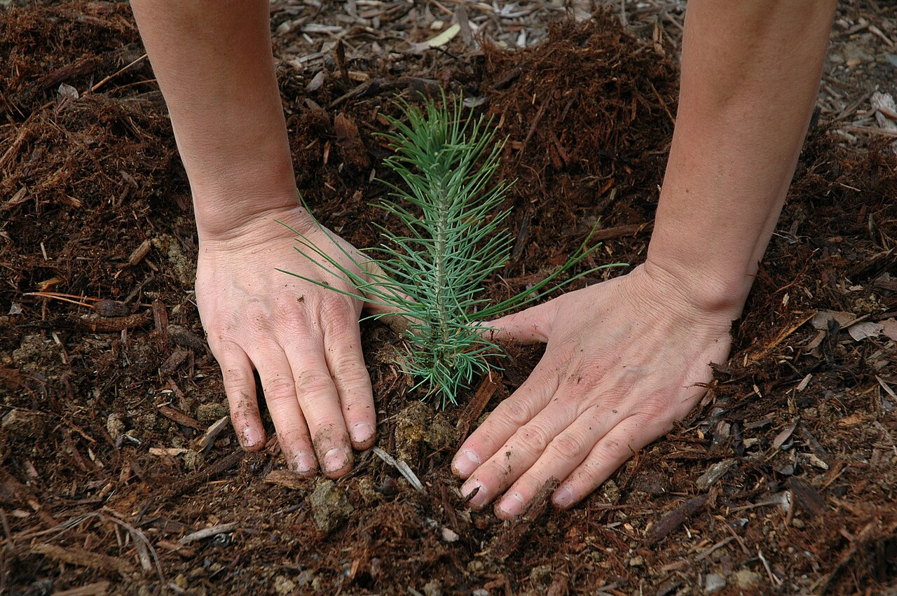

As we walked through the farm, Boreal Bot introduced us to four big ideas that make smart farming work. Hover over each card to explore!

Tiny sensors in the soil measure moisture, temperature, and nutrients, then send the data to a computer so the farm always knows what the plants need.

Plants grow without soil - their roots sit in nutrient-rich water. This uses far less water and lets crops grow indoors all year round.

By stacking crops on shelves under LED grow-lights, the farm grows much more food in a small space - perfect for cold northern climates.

Artificial intelligence reads all the sensor data and spots problems early - like a plant getting sick - then helps decide when to water, feed, or harvest.
The biggest lesson of all: smart farming is kinder to the planet. Recycling water, using clean energy for the lights, and growing food close to home all mean less waste and a smaller carbon footprint - while still feeding more people.

 Boreal
Boreal